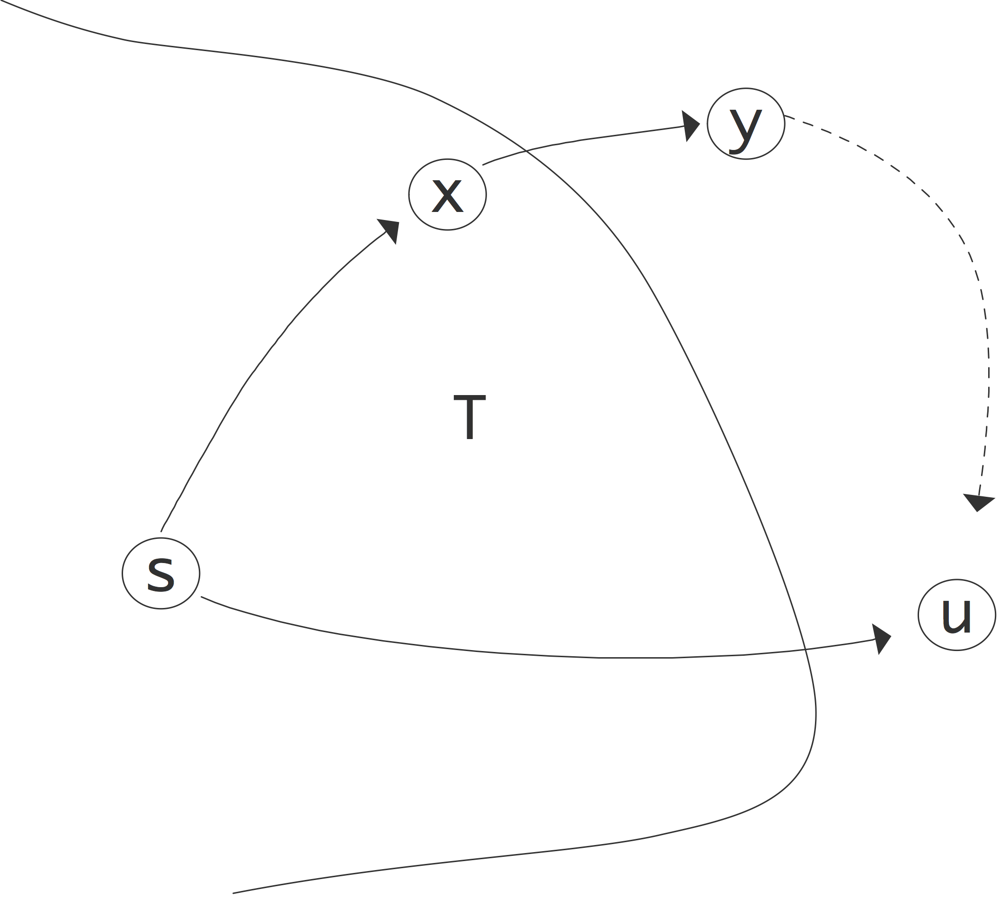

Various problems in scientific computing can be formulated as graph problems (for an introduction to graph theory see Appendix~ app:graph ); for instance, you have encountered the problem of load balancing (section~ 2.10.4 ) and finding independent sets (section~ 6.8.2 ).
Many traditional graph algorithms are not immediately, or at least not efficiently, applicable, since the graphs are often distributed, and traditional graph theory assume global knowledge of the whole graph. Moreover, graph theory is often concerned with finding the optimal algorithm, which is usually not a parallel one. Therefore, parallel graph algorithms are a field of study by themselves.
Recently, new types of graph computations in have arisen in scientific computing. Here the graph are no longer tools, but objects of study themselves. Examples are the World Wide Web or the social graph of Facebook , or the graph of all possible protein interactions in a living organism.
For this reason, combinatorial computational science is becoming a discipline in its own right. In this section we look at graph analytics : computations on large graphs. We start by discussing some classic algorithms, but we give them in an algebraic framework that will make parallel implementation much easier. For this, we first start by giving an algebraic presentation of graph algorithms.
crumb trail: > graphalgorithms > Graph algorithms as matrix-vector operations
Often we consider the adjacency matrix as nothing more than a table. We will now show that we can actually do algebraic computations with it, making it deserving of the name `matrix'. As a simple example of using linear algebra on an adjacency matrix~$G$, let $e$ the vector of all~$1$s, then $Ge$ is the vector that lists the degrees of the nodes.
We can do many operations this way. Consider a weighted graph~$G$. Finding for each node~$i$ the largest weight~$g_{ij}$ can be described as \[ y=G\otimes e\qquad\hbox{where}\qquad y_i=\max_j g_{ij}\cdot 1 \] This looks like the regular matrix-vector product $Ge$, but with the sum replaced by a maximum calculation.
crumb trail: > graphalgorithms > Graph algorithms as matrix-vector operations > State transitions
In many cases we actually need the left product, that is, multiplying the adjacency matrix from the left by a row vector. Let for example $e_i$~be the vector with a~$1$ in location~$i$ and zero elsewhere. Then $e_i^tG$ has a one in every~$j$ that is a neighbour of~$i$ in the adjacency graph of~$G$.
More general, if we compute $x^tG=y^t$ for a unit basis vector~$x$, we have \[ \begin{cases} x_i\not=0 \\ x_j=0&j\not= i \end{cases} \wedge G_{ij}\not=0 \Rightarrow y_j\not=0. \] Informally we can say that $G$ makes a transition from state~$i$ to state~$j$.
Often we have vectors with only nonnegative elements, which case \[ \begin{cases} x_i\not=0 \\ x_j\geq 0&\hbox{all $j$} \end{cases} \wedge G_{ij}\not=0 \Rightarrow y_j\not=0. \]
This left matrix-vector product has a simple application: Markov chains . Suppose we have a system (see for instance~ app:fsa ) that can be in any of $n$~states, and the probabilities of being in these states sum up to~$1$. We can then use the adjacency matrix to model state transitions.
Let $G$ by an adjacency matrix with the property that all elements are non-negative. For a Markov process, the sum of the probabilities of all state transitions, from a given state, is~$1$. We now interpret elements of the adjaceny matrix $g_{ij}$ as the probability of going from state $i$ to state~$j$. We now have that the elements in each row sum to~1.
Let $x$~be a probability vector, that is, $x_i$~is the nonegative probability of being in state~$i$, and the elements in~$x$ sum to~$1$, then $y^t=x^tG$ describes these probabilities, after one state transition.
For a vector $x$ to be a proper probability vector, its elements need to sum to~1. Show that, with a matrix as just described, the elements of~$y$ again sum to~1.
crumb trail: > graphalgorithms > Graph algorithms as matrix-vector operations > General matrix-vector product
The examples above showed that sometimes we perform an operation on an adjacency matrix that has the structure of a matrix-vector product, but may not necessarily use addition and multiplication. (Many more examples of this can be found in section 9.2 .)
For instance, suppose we use a vector to denote a set $V$ of vertices: $v_i=1$ for $i\in V$. Then $w^t=v^tG$ describes the set of neighbors of the vertices in $V$. However, if we use our regular matrix-vector product, some elements of $w^t$ may no longer be zero or one. (When does this happen, in graph terms?) To get that, we replace the addition in \[ w_j = \sum_i v_i G_{ij} \] by a more general reduction \[ w_j = \bigoplus_i v_i G_{ij} \] with taking a maximum as the reduction operator.
Motivated by such reasoning, we define a general product \[ y = G \mathop{\oplus\cdot_\otimes} x \] where $\otimes$ is a binary operator, and $\oplus$ a reduction operator, as \[ y_i = \bigoplus_j (g_{ij} \otimes x_j ). \] In this notation, finding the largest weight would be \[ w= G\mathop{\max\cdot_\times} e. \]
This will be used in several algorithms below; for other applications see [Kung:pegasus2009] .
crumb trail: > graphalgorithms > Graph algorithms as matrix-vector operations > Sample implementation
We assume that we have types vectorvalue and matrixvalue :
The most important part of the code is the matrix-vector multiplication; we give the left multiplication since that is most common in graph computations.
// graphmvp.cxx
Vector leftmultiply
( const Vector& left,
function< vectorvalue( vectorvalue,matrixvalue ) > mult,
function< vectorvalue( vectorvalue,vectorvalue ) > add
) const {
const int n = size();
Vector result(n);
for ( int row=0; row<n; row++ ) {
Vector partial(n);
for ( int col=0; col<n; col++ )
partial[col] = mult( left[row],adjacency[row][col] );
result.addin(partial,add);
}
return result;
};
We demonstrate this with two simple examples. First we do a single matrix-vector multiplication, with a matrix that connects each node to its successor modulo the matrix size: \[ m_{ij} = \delta_{i+1,j} \] We apply this to a vector corresponding to a single vertex: \snippetwithoutput{graphshift}{graph}{graph1}
In the second example we take the same matrix, but now compute the single-source shortest path to each node. This makes the multiplication and addition routines marginally more complex:
auto mult =
[] ( vectorvalue v,matrixvalue m ) -> vectorvalue {
if (m==empty) return undefined;
else if (v==undefined) return v;
else return v+1;
};
auto add =
[] ( vectorvalue x,vectorvalue y ) -> vectorvalue {
if (x==undefined) return y;
else if (y==undefined) return x;
else // return minimum
return ( x<y ? x : y );
};
We now apply the matrix-vector multiplication until we have found the distance to each vertex: \snippetwithoutput{graphdistloop}{graph}{graph2}
crumb trail: > graphalgorithms > Traditional graph algorithms
We start by looking at a few `classic' graph algorithms, and we discuss how they can be implemented in parallel. The connection between graphs and sparse matrices (see Appendix app:graph ) will be crucial here: many graph algorithms have the structure of a sparse matrix-vector multiplication .
crumb trail: > graphalgorithms > Traditional graph algorithms > Shortest path algorithms
There are several types of shortest path algorithms. For instance, in the single source shortest path algorithm one wants the shortest path from a given node to any other node. In all-pairs shortest path algorithms one wants to know the distance between any two nodes. Computing the actual paths is not part of these algorithms; however, it is usually easy to include some information by which the path can be reconstructed later.
We start with a simple algorithm: finding the single source shortest paths in an unweighted graph. This is simple to do with a BFS :
Input: A graph, and a starting node $s$} \Output{A function $d(v)$ that measures the distance from $s$ to $v$} Let $s$ be given, and set $d(s)=0$\; Initialize the finished set as $U=\{s\}$\; Set $c=1$\; \While{not finished}{ Let $V$ the neighbours of $U$ that are not themselves in $U$\; \If{$V=\emptyset$}{We're done}\Else{ Set $d(v)=c+1$ for all $v\in V$.\; $U\leftarrow U\cup V$\; Increase $c\leftarrow c+1$ }
This way of formulating an algorithm is useful for theoretical purposes: typically you can formulate a predicate that is true for every iteration of the while loop. This then allows you to prove that the algorithm terminates and that it computes what you intended it to compute. And on a traditional processor this would indeed be how you program a graph algorithm. However, these days graphs such as from Facebook can be enormous, and you want to program your graph algorithm in parallel.
In that case, the traditional formulations fall short:
crumb trail: > graphalgorithms > Traditional graph algorithms > Floyd-Warshall all-pairs shortest path
The Floyd-Warshall algorithm is an example of an all-pairs shortest paths algorithm. It is a dynamic programming algorithm that is based on gradually increasing the set of intermediate nodes for the paths. Specifically, in step $k$ all paths $u\rightsquigarrow v$ are considered that have intermediate nodes in the set $k=\{0,…,k-1\}$, and $\Delta_k(u,v)$ is the defined as the path length from $u$ to $v$ where all intermediate nodes are in $k$. Initially, this means that only graph edges are considered, and when $k\equiv |V|$ we have considered all possible paths and we are done.
The computational step is
\Delta\_{k+1}(u,v) = \min\bigl\{ \Delta\_k(u,v), \Delta\_k(u,k)+\Delta\_k(k,v) \bigr\}. \label{eq:floyd-allpairs} \end{equation}that is, the $k$-th estimate for the distance $\Delta(u,v)$ is the minimum of the old one, and a new path that has become feasible now that we are considering node $k$. This latter path is found by concatenating paths $u\rightsquigarrow k$ and $k\rightsquigarrow v$.
Writing it algorithmically:
\For {$k$ from zero to $|V|$}{ \For {all nodes $u,v$} { $\Delta\_{uv} \leftarrow f(\Delta\_{uv},\Delta\_{uk},\Delta\_{kv})$ } }we see that this algorithm has a similar structure to Gaussian elimination, except that there the inner loop would be `for all $u,v>k$'.
In section 5.4.3 you saw that the factorization of sparse matrices leads to fill-in , so the same problem occurs here. This requires flexible data structures, and this problem becomes even worse in parallel; see section 9.6 .
Algebraically:
\For {$k$ from zero to $|V|$} { $D\leftarrow D.\_{\min} \bigl[D(:,k) \mathbin{\min\cdot\_+} D(k,:) \bigr]$ }The Floyd-Warshall algorithm does not tell you the actual path. Storing those paths during the distance calculation above is costly, both in time and memory. A simpler solution is possible: we store a second matrix $n(i,j)$ that has the highest node number of the path between $i$ and $j$.
Include the calculation of $n(i,j)$ in the Floyd-Warshall algorithm, and describe how to use this to find the shortest path between $i$ and $j$ once $d(\cdot,\cdot)$ and $n(\cdot,\cdot)$ are known.
crumb trail: > graphalgorithms > Traditional graph algorithms > Spanning trees
In an undirected graph $G=\langle V,E\rangle$, we call $T\subset E$ a `tree' if it is connected and acyclic. It is called a spanning tree if additionally its edges contain all vertices. If the graph has edge weights $w_i\colon i\in E$, the tree has weight $\sum_{e\in T} w_e$, and we call a tree a minimum spanning tree if it has minimum weight. A minimum spanning tree need not be unique.
Prim's algorithm, a slight variant of Dijkstra's shortest path algorithm , computes a spanning tree starting at a root. The root has path length zero, and all other nodes infinity. In each step, all nodes connected to the known tree nodes are considered, and their best known path length updated.
\For {all vertices $v$}{$\ell(v)\leftarrow\infty$} $\ell(s)\leftarrow 0$\; $Q\leftarrow V-\{s\}$ and $T\leftarrow \{s\}$\; \While{$Q\not=\emptyset$} { let $u$ be the element in $Q$ with minimal $\ell(u)$ value\; remove $u$ from $Q$, and add it to $T$\; \For {$v\in Q$ with $(u,v)\in E$} { \If {$\ell(u)+w\_{uv}<
\ell(v)$} {Set $\ell(v)\leftarrow \ell(u)+w\_{uv}$} } }
FIGURE 9.1: Illustration of the correctness of Dijkstra's algorithm
The above algorithm computes the shortest distance from each node to the root node. The key to the correctness of this algorithm is the fact that we choose $u$ to have minimal $\ell(u)$ value. Call the true shortest path length to a vertex $L(v)$. Since we start with an $\ell$ value of infinity and only ever decrease it, we always have $L(v)\leq\ell(v)$.
Our induction hypothesis will be that, at any stage in the algorithm, for the nodes in the current $T$ the path length is determined correctly: \[ u\in T\Rightarrow L(u)=\ell(u). \] This is certainly true when the tree consists only of the root $s$. Now we need to prove the induction step: if for all nodes in the current tree the path length is correct, then we will also have $L(u)=\ell(u)$.
Suppose this is not true, and there is another path that is shorter. This path needs to go through some node $y$ that is not currently in $T$; this illustrated in figure 9.1 . Let $x$ be the node in $T$ on the purported shortest path right before $y$. Now we have $\ell(u)>L(u)$ since we do not have the right pathlength yet, and $L(u)>L(x)+w_{xy}$ since there is at least one edge (which has positive weight) between $y$ and $u$. But $x\in T$, so $L(x)=\ell(x)$ and $L(x)+w_{xy}=\ell(x)+w_{xy}$. Now we observe that when $x$ was added to $T$ its neighbours were updated, so $\ell(y)$ is $\ell_x+w_{xy}$ or less. Stringing together these inequalities we find \[ \ell(y)<\ell(x)+w_{xy}=L(x)+w_{xy}<L(u)<\ell(u) \] which contradicts the fact that we choose $u$ to have minimal $\ell$ value.
To parallelize this algorith we observe that the inner loop is independent and therefore parallelizable. However, the outer loop has a choice that minimizes a function value. Computing this choice is a reduction operator, and subsequently it needs to be broadcast. This strategy makes the sequential time equal to $d\log P$ where $d$ is the depth of the spanning tree.
On a single processor, finding the minimum value in an array is naively an $O(N)$ operation, but through the use of a priority queue this can be reduced to $O(\log N)$. For the parallel version of the spanning tree algorithm the corresponding term is $O(\log (N/P))$, not counting the $O(\log P)$ cost of the reduction.
crumb trail: > graphalgorithms > Traditional graph algorithms > Graph cutting
Sometimes you may want to partition a graph, for instance for purposes of parallel processing. If this is done by partitioning the vertices, you are as-it-were cutting edges, which is why this is known as a vertex cut partitioning. There are various criteria for what makes a good vertex cut. For instance, you want the cut parts to be of roughly equal size, to balance out parallel work.
Since the vertices often correspond to communication, you also want the number of vertices on the cut (or their sum of weights in case of a weighted graph) to be small. The graph Laplacian (section 19.6.1 ) is a popular algorithm for this.
Another example of graph cutting is the case of a bipartite graph : a graph with two classes of nodes, and only edges from the one class to the other. Such a graph can for instance model a population and a set of properties: edges denote that a person has a certain interest.
crumb trail: > graphalgorithms > Parallelization
Many graph algorithms, such as in section 9.2 , are not trivial to parallelize. Here are some considerations.
First of all, unlike in many other algorithms, it is hard to target the outermost loop level, since this is often a `while' loop, making a parallel stopping test necessary. On the other hand, typically there are macro steps that are sequential, but in which a number of variables are considered independently. Thus there is indeed parallelism to be exploited.
The independent work in graph algorithms is of an interesting structure. While we can identify `for all' loops, which are candidates for parallelization, these are different from what we have seen before.
For these reasons, a linear algebra formulation can be preferable. We definitely need this approach once distributed memory is considered, but even on multicore architectures it can pay off to encourage locality.
In section 6.5 we discussed the parallel evaluation of the sparse matrix-vector product. Because of the sparsity, only a partitioning by block rows or columns made sense. In effect, we let the partitioning be determined by one of the problem variables. This is also the only strategy that makes sense for single-source shortest path algorithms.
Can you make an \textit{a priori} argument for basing the parallelization on a distribution of the vector? How much data is involved in this operation, how much work, and how many sequential steps?
crumb trail: > graphalgorithms > Parallelization > Strategies
Here are three ways of parallelizing graph algorithms, in decreasing order of obviousness, and increasing order of scalability. (See also [Kalavri2016HighLevelPA] .)
crumb trail: > graphalgorithms > Parallelization > Strategies > Dynamic scheduling
Many graph algorithms build up a data structure $V$ of vertices to be processed; they they execute a sequence of supersteps containing a loop
for all v in V: // do something with vIf the processing of a vertex v does not affect $V$ itself, the loop is parallel and can be executed through dynamic scheduling.
This is in effect a dynamic assignment of data to processing elements. It is efficient in the sense that no processing element winds up with data elements on which no processing is needed, so all processing power of the computer is fully exploited. On the other hand, the dynamic assignment carries operating system overhead, and it leads to lots of data traffice, since a vertex is unlikely to be in local memory (such as cache) of the processing element.
A further problem is that the loop may look like:
for all v in V: for all neighbours u of v: // update something on uNow it can happen that two nodes v1,v2 both update a shared neighbour u , and this conflict needs to be resolved though cache coherence . This carries a latency penalty, or may even necessitate using locks, which carries an operating system penalty.
crumb trail: > graphalgorithms > Parallelization > Strategies > Vertex-centric thinking
crumb trail: > graphalgorithms > Parallelization > Strategies > Linear algebra interpretation
We will now show that graph algorithms can often be considered as sparse-matrix algorithms, which means that we can apply all the concepts and analysis we have developed for these.
If $G$ is the adjacency matrix of the graph, we can also formulate the shortest path algorithm analogous to a series of matrix-vector multiplications (see appendix section 9.1 ). Let $x$ be the vector tabulating distances from the source, that is, $x_i$ is the distance of node $i$ from the source. For any neighbour $j$ of $i$, the distance to the source is then $x_i+G_{ij}$, unless a shorter distance was already known. In other words, we can define a product \[ y^t=x^tG\equiv \forall_i\colon y_j = \min\bigl\{ x_j, \min_{i\colon G_{ij}\not=0} \{x_i+1\} \bigr\}, \] and the iterations of the above while-loop correspond to subsequent matrix-vector products under this definition.
This algorithm works because we can set $d(v)$ to its final value the first time we visit it: this happens precisely after a number of outer iterations equal to the path length. The total number of inner loop executions equals the number of edges in the graph. A weighted graph is somewhat trickier, since a path with more stages can actually be shorter as measured in the sum of the weights of the stages. Here is the Bellman-Ford algorithm:
Let $s$ be given, and set $d(s)=0$\; Set $d(v)=\infty$ for all other nodes $v$\; \For{$|E|-1$ times}{ \For{all edges $e=(u,v)$}{ Relax: \If{$d(u)+w\_{uv} <
d(v)$}{Set $d(v)\leftarrow d(u)+w\_{uv}$} } }This algorithm is correct since, for a given node $u$, after $k$ steps of the outer iteration it has considered all path $s\rightarrow u$ of $k$ stages.
What is the complexity of this algorithm? Can the length of the outer loop be reduced if you have some knowledge of the graph?We can again write this as a series of matrix-vector products, if we define the product as \[ y^t=x^tG\equiv \forall_i\colon y_j = \min\bigl\{ x_j, \min_{i\colon G_{ij}\not=0} \{x_i+g_{ij}\} \bigr\}, \] This has essentially the same basis as above: the minimum distance to $j$ is minimum of an already computed distance, or the minimum distance to any node $i$ plus the transition $g_{ij}$.
crumb trail: > graphalgorithms > Parallelization > Parallelizing the all-pairs algorithms
In the single-source shortest path algorithm above we didn't have much choice but to parallelize by distributing the vector rather than the matrix. This type of distribution is possible here too, and it corresponds to a one-dimensional distribution of the $D(\cdot,\cdot)$ quantities.
Sketch the parallel implementation of this variant of the algorithm. Show that each $k$-th iteration involves a broadcast with processor $k$ as root.However, this approach runs into the same scaling problems as the matrix-vector product using a one-dimensional distribution of the matrix; see section 6.2.2 . Therefore we need to use a two-dimensional distribution.
Do the scaling analysis. In a weak scaling scenario with constant memory, what is the asymptotic efficiency? Sketch the Floyd-Warshall algorithm using a two-dimensional distribution of the $D(\cdot,\cdot)$ quantities. The parallel Floyd-Warshall algorithm performs quite some operations on zeros, certainly in the early stages. Can you design an algorithm that avoids those?
crumb trail: > graphalgorithms > Parallelization > Partitioning
Traditional graph partitioning algorithms [LiTa:separator] are not simply parallelizable. Instead, two possible approaches are:
crumb trail: > graphalgorithms > `Real world' graphs
In discussions such as in section 4.2.3 you have seen how the discretization of PDEs leads to computational problems that has a graph aspect to them. Such graphs have properties that make them amenable to certain kinds of problems. For instance, using FDMs or FEMs to model two or three-dimensional objects leads graphs where each node is connected to just a few neighbours. This makes it easy to find separators , which in turn allows such solution methods as nested dissection ; see section 6.8.1 .
There are however applications with computationally intensive graph problems that do not look like FEM graphs. We will briefly look at the example of the world-wide web, and algorithms such Google 's PageRank which try to find authoratative nodes.
For now, we will call such graphs random graphs , although this term has a technical meaning too [Erdos:randomgraph] .
crumb trail: > graphalgorithms > `Real world' graphs > Properties of random graphs
The graphs we have seen in most of this course have properties that stem from the fact that they model objects in our three-dimensional world. Thus, the typical distance between two nodes is typically $O(N^{1/3})$ where $N$ is the number of nodes. Random graphs do not behave like this: they often have a small world property where the typical distance is $O(\log N)$. A famous example is the graph of film actors and their connection by having appeared in the same movie: according to `Six degrees of separation', no two actors have a distance more than six in this graph. In graph terms this means that the diameter of the graph is six.
Small-world graphs have other properties, such as the existence of cliques (although these feature too in higher order FEM problems) and hubs: nodes of a high degree. This leads to implications such as the following: deleting a random node in such a graph does not have a large effect on shortest paths.
Considering the graph of airports and the routes that exist between them. If there are only hubs and non-hubs, argue that deleting a non-hub has no effect on shortest paths between other airports. On the other hand, consider the nodes ordered in a two-dimensional grid, and delete an arbitrary node. How many shortest paths are affected?
crumb trail: > graphalgorithms > Hypertext algorithms
There are several algorithms based on linear algebra for measuring the importance of web sites [Langville2005eigenvector] . We will briefly define a few and discuss computational implications.
crumb trail: > graphalgorithms > Hypertext algorithms > HITS
In the HITS (Hypertext-Induced Text Search) algorithm, sites have a hub score that measures how many other sites it points to, and an authority score that measures how many sites point to it. To calculate such scores we define an incidence matrix $L$, where \[ L_{ij}= \begin{cases} 1&\mbox{document $i$ points to document $j$}\\ 0&\mbox{otherwise} \end{cases} \] The authority scores $x_i$ are defined as the sum of the hub scores $y_j$ of everything that points to $i$, and the other way around. Thus \[ \begin{array}{l} x=L^ty\\ y=Lx \end{array} \] or $x=LL^tx$ and $y=L^tLy$, showing that this is an eigenvalue problem. The eigenvector we need has only nonnegative entries; this is known as the Perron vector for a nonnegative matrix , see appendix 13.4 . The Perron vector is computed by a power method ; see section 13.3 .
A practical search strategy is:
crumb trail: > graphalgorithms > Hypertext algorithms > PageRank
The PageRank [PageBrin:PageRank] basic idea is similar to HITS: it models the question `if the user keeps clicking on links that are somehow the most desirable on a page, what will overall be the set of the most desirable links'. This is modeled by defining the ranking of a web page is the sum of the rank of all pages that connect to it. The algorithm It is often phrased iteratively:
\While{Not converged} { \For { all pages $i$} { $\mathrm{rank}\_i \leftarrow \epsilon + (1-\epsilon) \sum\_{j\colon\mathrm{connected}j\rightarrow i}\mathrm{rank}\_j$ } \; normalize the ranks vector \
}where the ranking is the fixed point of this algorithm. The $\epsilon$ term solve the problem that if a page has no outgoing links, a user that would wind up there would never leave.
Argue that this algorithm can be interpreted in two different ways, roughly corresponding to the Jacobi and Gauss-Seidel iterative methods; section 5.5.3 .In the PageRank algorithm, each page `gives its rank' to the ones it connects to. Give pseudocode for this variant. Show that it corresponds to a matrix-vector product by columns, as opposed to by rows for the above formulation. What would be a problem implementing this in shared memory parallelism?
For an analysis of this method, including the question of whether it converges at all, it is better to couch it completely in linear algebra terms. Again we define a connectivity matrix \[ M_{ij}= \begin{cases} 1&\mbox{if page $j$ links to $i$}\\ 0&\mbox{otherwise} \end{cases} \] With $e=(1,…,1)$, the vector $d^t=e^tM$ counts how many links there are on a page: $d_i$ is the number of links on page $i$. We construct a diagonal matrix $D=\diag(d_1,…)$ we normalize $M$ to $T=MD\inv$.
Now the columns sums (that is, the sum of the elements in any column) of $T$ are all $1$, which we can express as $e^tT=e^t$ where $e^t=(1,…,1)$. Such a matrix is called stochastic matrix . It has the following interpretation:
If $p$ is a probability vector , that is, $p_i$ is the probability that the user is looking at page $i$, then $Tp$ is the probability vector after the user has clicked on a random link.Mathematically, a probability vector is characterized by the fact that the sum of its elements is 1. Show that the product of a stochastic matrix and a probability vector is indeed again a probability vector.
The PageRank algorithm as formulated above would correspond to taking an arbitrary stochastic vector $p$, computing the power method $Tp,T^2p,T^3p,…$ and seeing if that sequence converges to something.
There are few problems with this basic algorithm, such as pages with no outgoing links. In general, mathematically we are dealing with `invariant subspaces'. Consider for instance an web with only 2 pages and the following adjacency matrix : \[ A= \begin{pmatrix} 1/2&0\\ 1/2&1 \end{pmatrix} . \] Check for yourself that this corresponds to the second page having no outgoing links. Now let $p$ be the starting vector $p^t=(1,1)$, and compute a few iterations of the power method. Do you see that the probability of the user being on the second page goes up to 1? The problem here is that we are dealing with a reducible matrix .
To prevent this problem, PageRank introduces another element: sometimes the user will get bored from clicking, and will go to an arbitrary page (there are also provisions for pages with no outgoing links). If we call $s$ the chance that the user will click on a link, then the chance of going to an arbitrary page is $1-s$. Together, we now have the process \[ p'\leftarrow sTp+(1-s)e, \] that is, if $p$ is a vector of probabilities then $p'$ is a vector of probabilities that describes where the user is after making one page transition, either by clicking on a link or by `teleporting'.
The PageRank vector is the stationary point of this process; you can think of it as the probability distribution after the user has made infinitely many transitions. The PageRank vector satisfies \[ p=sTp+(1-s)e \Leftrightarrow (I-sT)p=(1-s)e. \] Thus, we now have to wonder whether $I-sT$ has an inverse. If the inverse exists it satisfies \[ (I-sT)\inv = I+sT+s^2T^2+\cdots \] It is not hard to see that the inverse exists: with the Gershgorin theorem (appendix 13.5 ) you can see that the eigenvalues of $T$ satisfy $|\lambda|\leq 1$. Now use that $s<1$, so the series of partial sums converges.
The above formula for the inverse also indicates a way to compute the PageRank vector $p$ by using a series of matrix-vector multiplications.
Write pseudo-code for computing the PageRank vector, given the matrix $T$. Show that you never need to compute the powers of $T$ explicitly. (This is an instance of Horner's rule ).In the case that $s=1$, meaning that we rule out teleportation, the PageRank vector satisfies $p=Tp$, which is again the problem of finding the Perron vector ; see appendix 13.4 .
We find the Perron vector by a power iteration (section 13.3 ) \[ p^{(i+1)} = T p^{(i)}. \] This is a sparse matrix vector product, but unlike in the BVP case the sparsity is unlikely to have a structure such as bandedness. Computationally, one probably has to use the same parallelism arguments as for a dense matrix: the matrix has to be distributed two-dimensionally [OgAi:sparsestorage] .
crumb trail: > graphalgorithms > Large-scale computational graph theory
In the preceding sections you have seen that many graph algorithms have a computational structure that makes the matrix-vector product their most important kernel. Since most graphs are of low degree relative to the number of nodes, the product is a sparse matrix-vector product.
In many cases we can then, as in section 6.5 , make a one-dimensional distribution of the matrix, induced by a distribution of the graph nodes: if a processor owns a graph node $i$, it owns all the edges $i,j$.
However, often the computation is very unbalanced. For instance, in the single-source shortest path algorithm only the vertices along the front are active. For this reason, sometimes a distribution of edges rather than vertices makes sense. For an even balancing of the load even random distributions can be used.
The parallelization of the Floyd-Warshall algorithm (section 9.2.2 ) proceeds along different lines. Here we don't compute a quantity per node, but a quantity that is a function of pairs of nodes, that is, a matrix-like quantity. Thus, instead of distributing the nodes, we distribute the pair distances.
crumb trail: > graphalgorithms > Large-scale computational graph theory > Distribution of nodes vs edges
Sometimes we need to go beyond a one-dimensional decomposition in dealing with sparse graph matrices. Let's assume that we're dealing with a graph that has a structure that is more or less random, for instance in the sense that the chance of there being an edge is the same for any pair of vertices. Also assuming that we have a large number of vertices and edges, every processor will then store a certain number of vertices. The conclusion is then that the chance that any pair of processors needs to exchange a message is the same, so the number of messages is $O(P)$. (Another way of visualizing this is to see that nonzeros are randomly distributed through the matrix.) This does not give a scalable algorithm.
The way out is to treat this sparse matrix as a dense one, and invoke the arguments from section 6.2.2 to decide on a two-dimensional distribution of the matrix. (See [Yoo:2005:scalable-bfs] for an application to the BFS problem; they formulate their algorithm in graph terms, but the structure of the 2D matrix-vector product is clearly recognizable.) The two-dimensional product algorithm only needs collectives in processor rows and columns, so the number of processors involved is $O(\sqrt P)$.
crumb trail: > graphalgorithms > Large-scale computational graph theory > Hyper-sparse data structures
With a two-dimensional distribution of sparse matrices, it is conceivable that some processes wind up with matrices that have empty rows. Formally, a matrix is called hyper-sparse if the number of nonzeros is (asymptotically) less than the dimension.
In this case, CRS format can be inefficient, and something called double-compressed storage can be used [BulucGilbert:hypersparse] .